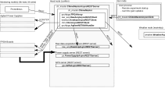

pychfpga: CHIME telescope control package
The pychfpga package is a collection of Python modules that are used to initialize and operate the CHIME telescope FPGA-based F-Engine, corner-turn engine and X-and make it produce and store correlated data. The data processing pipeline, which is not within the scope of this package, then process the data to generate usable scientific data.
The main module, fpga_master, is used to connect with the various remote processes and hardware that operate the array, configure them into the desired configuration, and runs in the background to provide monitoring information and receiver further commands.
Installation
kotekan and carillon are already both configured to run fpga_master from any user. These machines are accessible by both the public-facing liberty (192.139.21.135) or tubular (192.139.21.201) computers. All the system files and python packages required to run fpga_master have been installed as root user and are available to all users. Also, the networking shoudld be set to allow FPGA UDP packets, mDNS packets and Jumbo frames (for ADC raw data). if you have any issues, see Installation section.
Quick start
First, make sure you have a copy of both the pychfpga and chfpga_lite GIT repositories (see Getting the source code).
To start an experiment with fpga_master with the configuration jfc.erh, cd to the pychfpga repository folder and execute:
./fpga_master.py jfc.erh
Here, jfc.erh is the config defined in config.yaml, which in this case powers-up all the crates in the East receiver Hut (ERH), initialize all boards, start capturing raw data for 5 minutes, and continues running after that until stopped with Ctrl-C.
The fpga_master script tries to connect to a fpga_master server (or creates a new one), which in turn connect to a ADC raw data acquisition (raw_acq), power supply (ps) server, etc. If any of those servers are not already running, new local servers will be created and initialized. These servers run until the script is interrupted. While they run, all these servers can be queried with REST commands. Prometheus will get the metrics from these servers through these REST servers.
Although fpga_master will start its own power supply server if needed, it is usually a good idea to continuously run the power supply server so Prometheus can see the state of the supplies at all time, and allow command-line control of the supplies. To start a power supply server on the local machine, just do:
./ps.py jfc.drao # no need to specify the which server config to use: there is only one in jfc.drao.
Then leave it running (preferably in a screen that won’t die when you log out or if your connection is lost…). You can then send commands to the power supply server running on the local machine from another shell:
./ps.py status # show the status of all supplies managed by the local server
./ps.py power_off erh # powers off the erh FPGA . 'erh' is a alias defined in the config file that refer to 'ps_crate4 ps_crate5 ps_crate6 and ps_crate7'
./ps.py power_on ps_crate1 ps_crate2 ps_crate3 # power up the power supply units by name
More details can be found in ps module: Power supply server and client.
The GPS server is a non-critical service and is not started by fpga_master. To start it, just do:
./gps.py jfc.drao # again, there is only one gps server configuration to use in jfc.drao, so no need to specify it.
More details can be found in gps module: GPS server and client.
Main Modules
The CHIME telescope subsystems
The following figure illustrates the main subsystems of the CHIME telescope Front-End.

